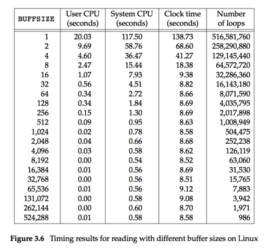

本章讨论普通文件的读写、读写效率、简单介绍文件描述符、IO效率、文件共享和原子操作、dup、文件映射、临时文件。
在Linux系统中，打开的文件是用一个整数来表示的，表示打开文件的整数，称之为文件描述符。当需要往写数据/读数据时，读写函数都需要文件描述符作为参数，以便系统知道用户操作的时哪个文件。
| mode选项 | 解释 |
|---|---|
| O_RDONLY | 读方式打开 |
| O_WRONLY | 写方式打开 |
| O_RDWR | 读写方式打开 |
| O_CREAT | 创建文件，如果文件存在，会被截断 |
| O_TRUNC | 截断 |
| O_APPEND | 追加 |
| O_EXCL | 和O_CREAT一起用，如果文件存在则失败 |
int open(const char* path, int flag, ...);
如果open函数的flags有O_CREAT，那么第三个参数起作用。第三个参数指示新建的文件的属性。文件真实的权限，受umask的影响。影响方法
关闭文件。
在dup时，有更多讨论。
读写文件，会导致文件指针移动。
文件指针是一个整数，描述当前读写位置，可以使用lseek移动文件指针。
当读写文件时，缓冲区设置为1024到4096是一个比较合适的尺寸。

两个进程可以打开同一个文件进行操作，实现数据的共享。但是当两个进程打开同一个文件进行写操作时，会相互覆盖。当文件被打开两次时，两个文件描述符有各自的文件指针。
内核保存一个全局的文件描述结构体，而一个文件打开两次之后，两个结构体各自有各自的文件指针。
dup函数可以复制文件描述符，让两个文件描述符指向同一个文件结构，通过dup复制文件描述符和两次打开文件描述符不同，所以两个文件描述符共享一个文件指针。
当一个文件描述符被关闭时，关闭的是内核的文件描述结构，但是如果文件描述结构体中，引用计数器不为1，那么close函数就只是减少了引用计数器而已。
原子操作是指一个操作一旦启动，则无法被能破坏它的其它操作打断。
写文件
无论是两次打开还是dup，同时操作一个文件都可能引起混乱，解决这个问题的方法是，可以通过O_APPEND解决这个问题。O_APPEND选项可以使得当一个写操作正在进行时，另外一个对该文件的写操作会阻塞等待。这意味着有O_APPEND选项的文件描述符，写操作无法被打断。
应用场景，多进程写Log文件
创建文件
除了写操作有原子性问题，创建文件也有，如果两个进程同时调用creat或者带O_CREAT的open，创建同一个文件时，可能会出现这种情况，第一个操作创建成功之后，写入数据，而第二个操作的O_CREAT把数据抹去了。
但是如果在O_CREAT之后，加上O_EXCL，那么可以避免这种情况。
fcntl可以用来设置文件描述符属性、文件状态属性、文件描述符复制、设置文件锁、设置文件通知等功能，这里只表示学习通过fcntl修改文件描述符属性。
如果一个文件描述符没有O_APPEND属性，但是后来又需要这个属性，那么可以通过fcntl来设置。
int flags;
flags = O_WRONLY;
flags = O_APPEND;
struct file
{
// int append;
// int write;
// int read;
uint8_t flags; // 1 append, 2 write 3 read
};
flags = 0x3; // append + write
flags = 0x5;
flags &= ~O_APPEND;
ioctl是一个杂项函数，一般用于文件底层属性设置。
文件映射能将硬盘映射到进程的地址，这样可以像操作内存一样操作文件，而且效率很高，但是有一定限制：
文件长度必须大于等于映射长度
映射的offset必须是页的整数倍
页的尺寸获取方式：
命令行getconf -a | grep PAGE_SIZE
函数sysconf(_SC_PAGE_SIZE)
可以通过mktemp(3)来获取一个临时文件路径，但是该文件不一定在/tmp目录下，在哪个目录下需要程序员指定。
Linux还有更多的创建临时文件的函数，学有余力的同学可以通过
man 3 mktemp，查看相关函数。
为了提高IO效率，系统为应用程序提供了缓存服务。当应用程序写数据到硬盘时，内核只是将数据写入内核缓存，然后返回成功。
缓存的存在隐藏风险，如果缓存数据未写入硬盘时，发生断电故障，那么会导致数据的不完整性。
关键数据的不完整，可能会导致系统崩溃。
使用O_SYNC选项打开文件时，那么写入操作将保证数据写入到硬盘再返回，当然这个选项导致IO效率降低。
也可以使用sync，fsync，fsyncdata之类的函数，将数据写入硬盘。
fwrite和write都有缓存，不过fwrite在用户空间和内核空间都有缓存，而write只有在内核空间有缓存。
每一个进程都默认打开三个文件，三个文件描述符分别是0，1，2。printf其实是调用write(1)实现的。
一般不直接使用0,1,2来表示三个文件，而是用宏STDIN_FILENO,STDOUT_FILENO, STDERR_FILENO来表示。
返回可用的最小的文件描述符。
进程范围内唯一。
也是用来赋值文件描述符，第二个参数指示复制的位置。
open/creat：打开文件/创建文件
read：读文件
write：写文件
close：关闭文件
lseek：定位文件读写位置
fcntl：修改文件属性
sysconf：读取系统配置
dup/dup2：复制文件描述符
sync/fsync/fsyncdata：同步文件数据
mmap/munmap：文件映射
mkstemp：得到临时文件路径
touch：修改文件的访问时间，创建文件
cat：访问文件内容
vim：编辑
ulimit：显示一些限制信息（文件描述符最大值、栈的空间尺寸）
umask：文件创建的权限掩码
getconf：对应sysconf